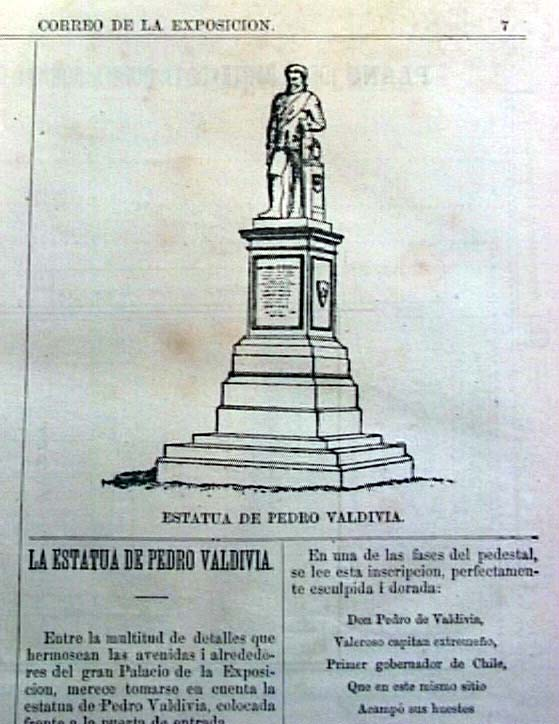

|
|  |
|
Statue of Pedro de Valdivia
|
Images of the colonial origins of the Chilean nation had already gained a prominent place at national exhibitions, first and foremost the monumental Esposicion del Coloniaje organised by Santiago압 mayor Benjam暗 Vicu人 Mackenna in 1873, before being exported to overseas fairs along with sample압 of Chile압 principal commodities. The first National Exhibition, in 1875, featured the unveiling of a statue of Pedro de Valdivia, paying homage to the city압 founder as well as symbolically relating the event itself to this first foundational moment, as yet another instance of departure towards a future of progress and civilisation.
|